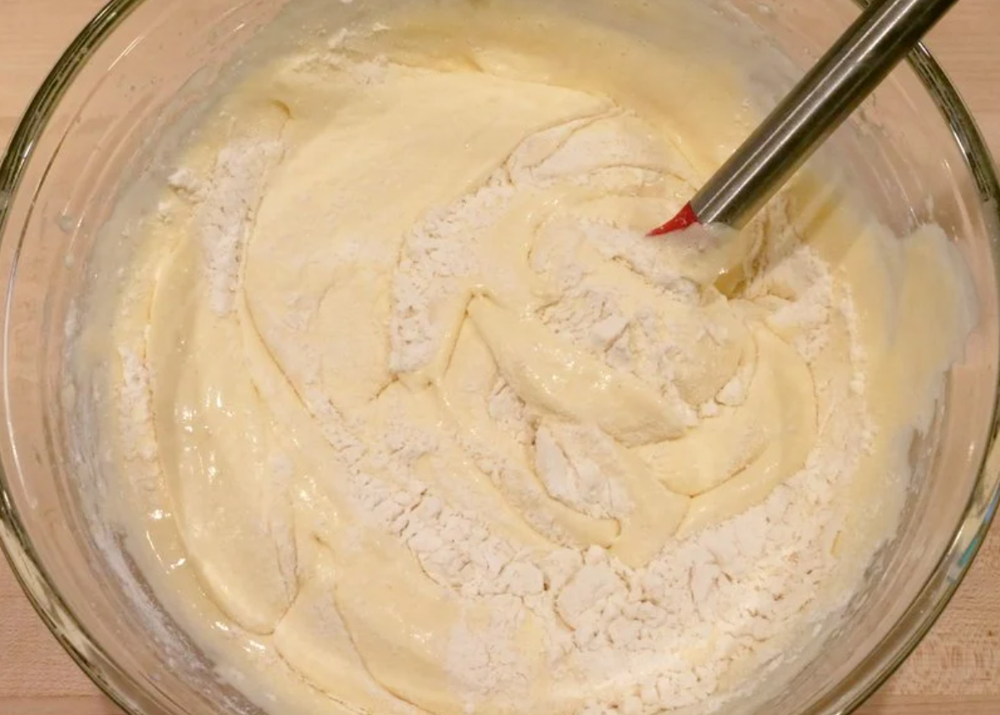
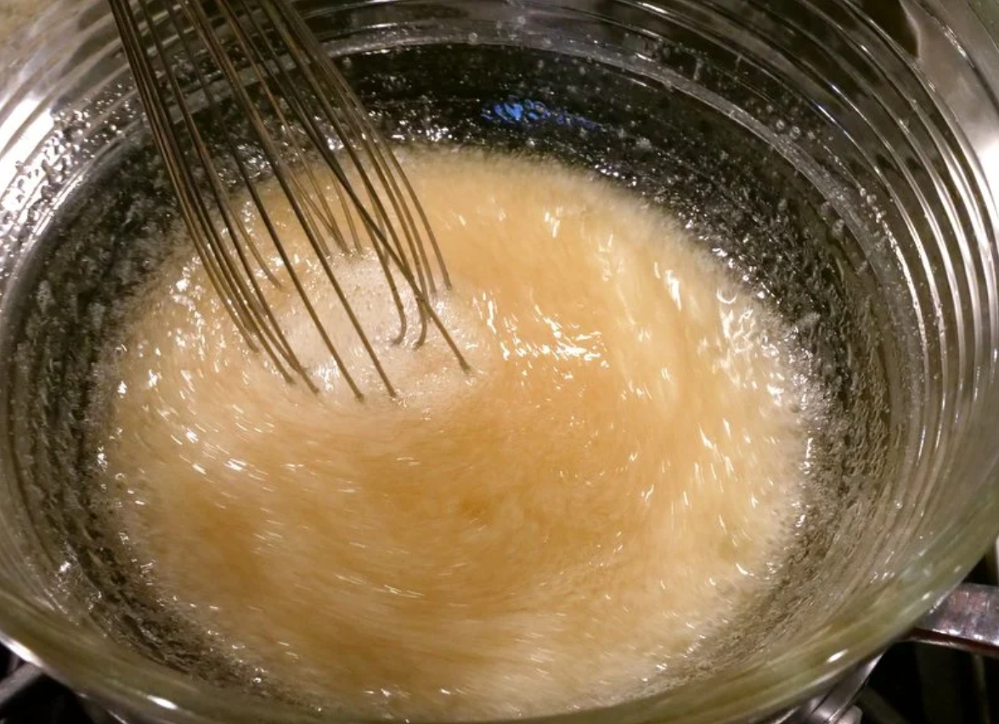
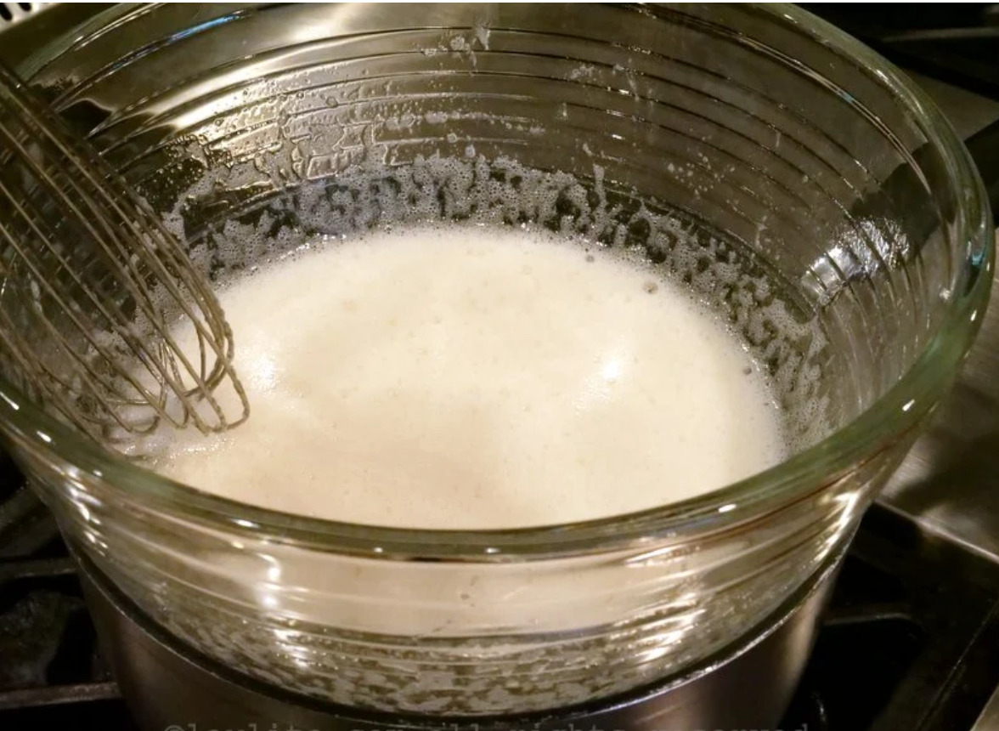
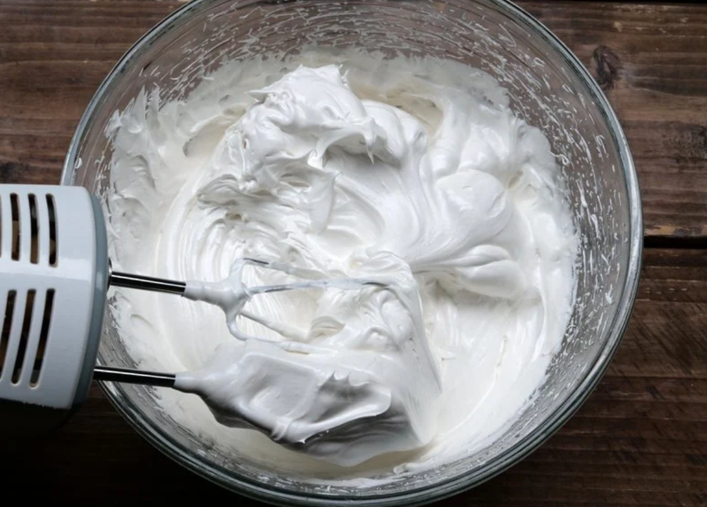

Recipe to prepare a classic and traditional tres leches cake. This delicious tres leches cake has a meringue topping.
Rating: ★★★★★
8 servings
Ingredients
For the cake:
4 eggs
1 cup sugar
1 cup all-purpose flour
1 teaspoon vanilla
1 pinch of salt
14 ounces of condensed milk (one can)
12 ounces of evaporated milk or liquid cream (one can)
1 cup of milk
For the meringue:
4 egg whites
1 cup sugar
1 pinch of salt
1/4 teaspoon cream of tartar or a few drops of lemon juice
2 tablespoons ground cinnamon
Preparation
For the cake:
Preheat oven to 350 degrees Fahrenheit.
Separate the whites and yolks from the 4 eggs.
In a large bowl, add the four egg whites and start beating until foamy.
It is recommended to use an electric mixer, but if you don't have one, don't worry, with a hand whisk you can also get the result you need, it just requires a little more effort.
Stir in the sugar and continue beating until you have a glossy mixture.
With the mixer on low speed, add the yolks, a pinch of salt and vanilla to the mixture.
Add the flour and with the help of a spatula, make enveloping movements in the mixture until the flour is completely incorporated. Don't forget to sift or sift it beforehand to avoid lumps.

Pour the mixture into a pre-greased 20x20 cm (8x8 in) tin and bake for 20-25 minutes at 180C or 30-35 minutes at 350F - or until golden brown and a toothpick inserted comes out dry.
In another bowl, add the condensed milk, evaporated milk (or cream), and whole milk, mix well until you get a homogeneous texture.
When the cake is ready, use a straw, toothpick, fork, or any other type of "stick" to make small holes over the entire surface.
Pour the mixture of the three milks over the cake. Make sure to cover all the corners.
Store the cake in the fridge while you prepare the meringue for decoration. This cake tastes much better when it is cold, so it is advisable to let it cool for at least 12 hours before serving it.
For the meringue:
This Swiss-style meringue is prepared the first part in the style of Bain-marie on the stovetop. A little water is put to boil in a pot, and then when boiling the temperature is lowered to as low as possible.
Then in a glass bowl or dish (heatproof and can be used for whisking), place the egg whites, sugar, pinch of salt, and cream of tartar.

The bowl is placed on top of the pot, it is important that the water does not touch the bowl directly. Using a whisk, gently beat the egg whites mixture with the sugar for 8 to 10 minutes. It is important not to stop beating or the egg whites may cook and will not be used for the meringue.

Then remove from the heat and beat with an electric mixer on high speed for 5 minutes and until the meringue forms peaks.

A little tip to stabilize meringue is to add 1 or 2 tablespoons of powdered sugar just when you start to get the texture of the meringue. If you want to add vanilla essence or another essence you can do so at this time.